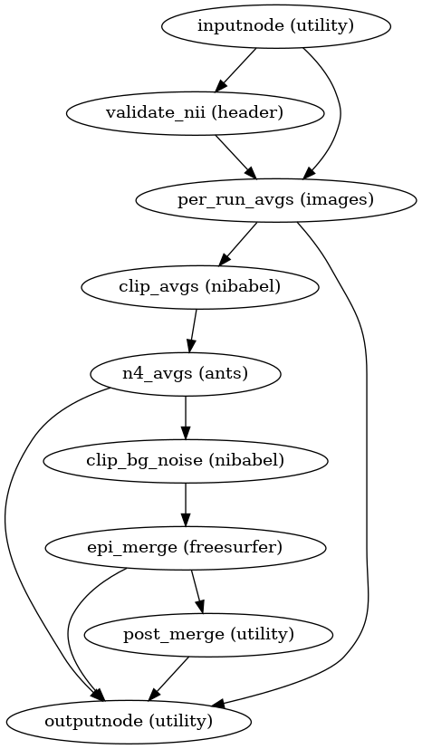

niworkflows.workflows.epi.refmap module¶
Workflow for the generation of EPI (echo-planar imaging) references.
-
niworkflows.workflows.epi.refmap.init_epi_reference_wf(omp_nthreads, auto_bold_nss=False, name='epi_reference_wf')[source]¶ Build a workflow that generates a reference map from a set of EPI images.
Danger
All input files MUST have the same shimming configuration. At the very least, make sure all input EPI images are acquired within the same session, and have the same PE direction and total readout time.
Inputs to this workflow might be a list of SBRefs, a list of fieldmapping EPIs, a list of BOLD images, or a list of DWI datasets. Please note that these different modalities should not be mixed together in any case for this particular workflow.
For BOLD datasets, the workflow may be set up to execute an algorithm that determines the nonsteady states in the beginning of the timeseries (also called dummy scans), and uses those for generating a reference of the particular run, since the nonsteady states are known to yield better T1 contrast (and hence perhaps better signal for image registration).
Relatedly, the workflow also provides a global signal drift estimation per run. This global signal drift is typically interesting for DWIs: because b=0 volumes are typically scattered throughout the scan, this drift can be fit an exponential decay to model the signal drop caused by the increasing temperature of the device (this is closely related to BOLD nonsteady states described above, as these are just the few initial instants when the exponential decay is much faster).
- Workflow Graph
- 
(Source code, png, svg, pdf)
- Parameters
omp_nthreads (
int) – Maximum number of threads an individual process may usename (
str) – Name of workflow (default:epi_reference_wf)auto_bold_nss (
bool) – IfTrue, determines nonsteady states in the beginning of the timeseries and selects them for the averaging of each run. IMPORTANT: this option applies only to BOLD EPIs.
- Inputs
in_files (
listofstr) – List of paths of the input EPI images from which reference volumes will be selected, aligned and averaged.- Outputs
epi_ref_file (
str) – Path of the generated EPI reference file.xfm_files (
listofstr) – List of rigid-body transforms in LTA format to resample from the reference volume of each run into theepi_ref_filereference.per_run_ref_files (
listofstr) – List of paths to the reference volume generated per input run.drift_factors (
listoflistoffloat) – A list of global signal drift factors for the set of volumes selected for averaging, per run.n_dummy_scans (
listofint) – Number of nonsteady states at the beginning of each run (only BOLD withauto_bold_nss=True)
See also
Discussion and original flowchart at nipreps/niworkflows#601.
{kind=link}
{kind=link}